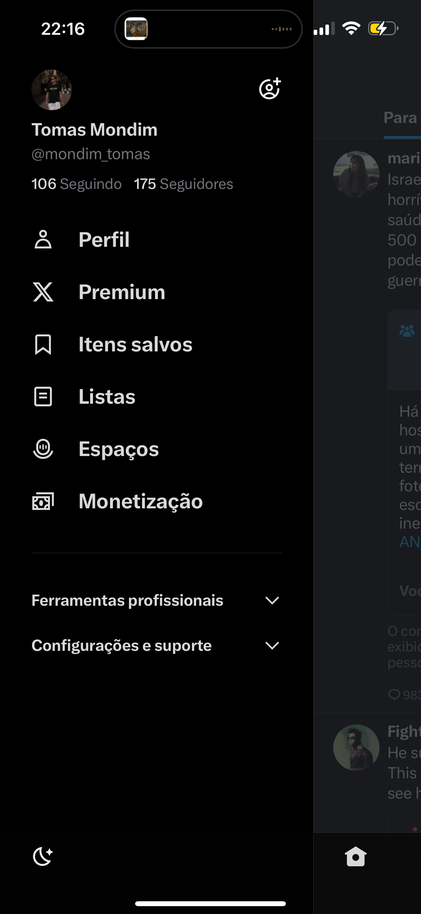
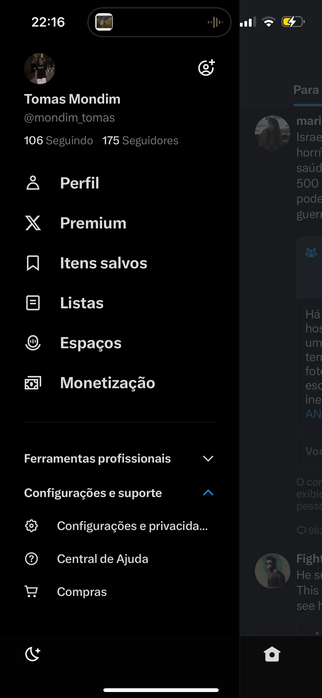
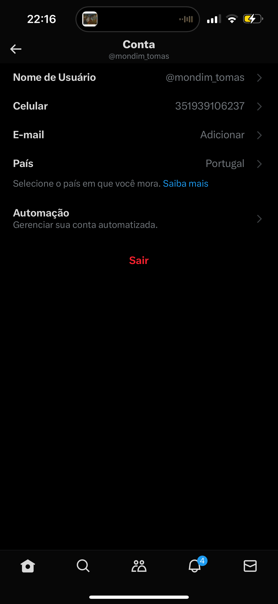

Lab 1: Good and Bad Designs
Good design
Neste caso, apresento um exemplo de bom design, introduzindo uma funcionalidade do macOs sonoma
widgets que posso usar diretamente na secretária para ouvir podcasts, desligar as luzes e muito mais.
Sim... Retirei este resumo do pitch da apple.

É possivel editar estes widgets tal como ja era possivel no iphone tornando assim o workflow muito mais fluido com poucos cliques para descobrir certas informacoes
Bad design
O meu exemplo de bad design é o facto de na aplicacao mobile do Twitter/X ser bastante dificil aceder à opcao do logout!
Estando na pagina inicial sao necessarios 6 cliques para aceder a esta opcao, para alem de nao ser claro o caminho para la chegar.
 Acredito que tenham feito isto para o cliente não fazer logout da aplicacao!
Mas de qualquer maneira foi uma experiencia frustrante e que me fez na respeitar tanto a aplicação. Sugestão de correção
<